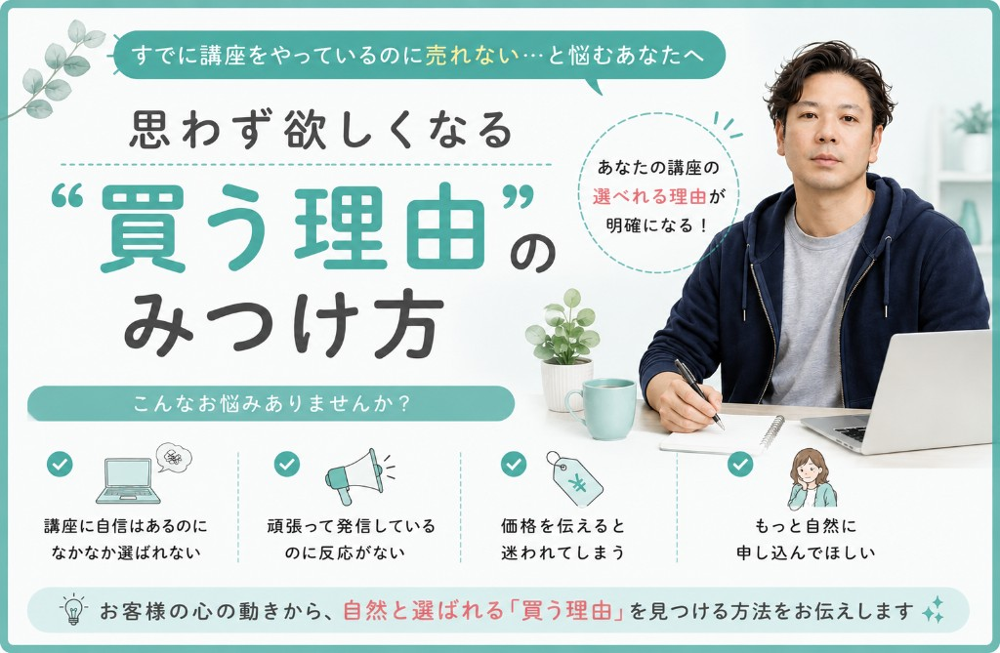

講座に自信はあるのに選ばれない
内容には自信があるのに、申し込みの決め手にならない。

7日間限定価格でご案内
お客様の心の動きから、自然と選ばれる「買う理由」を見つける教材です。
発信、LP、LINE、参加用シナリオ、個別相談まで、伝える軸を一本化します。
特別価格
通常 9,800円7日間限定 4,800円
8日目以降は 9,800円になります
ページ内の購入案内までスクロールします
内容には自信があるのに、申し込みの決め手にならない。
頑張って投稿しても、欲しい人に刺さっている感覚がない。
興味は持ってもらえても、「今じゃない」で終わってしまう。
押したくない気持ちが先に立って、案内が弱くなってしまう。
多くの人は、売れない理由を商品の質や価格や実績のせいにします。 でも実際には、商品がいいかどうかと、商品が売れるかどうかは同じではありません。
人は商品そのものを買っているのではなく、
「これを買うことで、私の何が変わるのか」を買っています。
つまり、どれだけ内容が良くても、お客様の中に「買う理由」が生まれていなければ人は動きません。 逆に言えば、その理由さえ見つかれば、売り込みが得意でなくても自然と欲しくなる流れは作れます。
これで自分の未来が変わりそうか。
不安なく進めそうか。納得して選べそうか。
今の悩みから本当に抜け出せそうか。
この人ならわかってくれそうか。この人から受けたいか。
お客様は、機能や情報量だけで買うわけではありません。 本当はもっと感情に近いところで判断しています。
だからこそ、どれだけ正しい説明を並べても、「欲しい」で止まることがあります。 必要なのは、欲しいを買うに変える理由です。
第1章
商品・価格・発信量の問題ではなく、構造で見直します。
第2章
感情・未来・信頼・納得・タイミング・自己一致の6要素を整理します。
第3章
商品の説明では見えにくい、本当の価値の見つけ方を掘ります。
第4章
お客様が思わず反応する一点を見つけ、言葉にします。
第5章
悩みから購入へどう動くのか、その順番を理解します。
第6章
キャッチコピー、世界観、ストーリー、オファーの強め方を整理します。
第7章
SNS、広告、LP、LINE、LIVE、個別相談まで一本化します。
第8章
占い、育脳、健康、スピリチュアル、カウンセリングの変換例で理解を深めます。
第9章
商品や広告より前に、買う理由を育てている視点で全体をまとめます。
特典1
教材を読んで実践する中で出てくる疑問や悩みに、30日間チャットでお答えします。あなたの商品に合わせて、改善ポイントを具体的にアドバイスします。
特典2
文章だけでは伝えきれない考え方や事例を動画で詳しく解説します。読むだけでなく、判断基準まで理解できる内容です。
特典3
あなたの商品・講座・サービスを実際に拝見し、お客様が思わず欲しくなるホットポイントを診断します。あなたの商品だけの「買う理由」を一緒に見つけていきます。
通常価格 9,800円
7日間限定 4,800円
8日目以降は 9,800円に戻ります。後回しにしやすいテーマだからこそ、このタイミングで整えてみてください。
最後にもう一度だけ
売れる人は、商品や広告を変える前に、
お客様が動く理由を育てています。
申込み内容
教材 + 各章解説動画（全10本） + 3特典
7日間限定 4,800円 / 8日目以降 9,800円
決済リンクや申込みフォームがある場合は、このボタンURLを差し替えてそのまま使えます